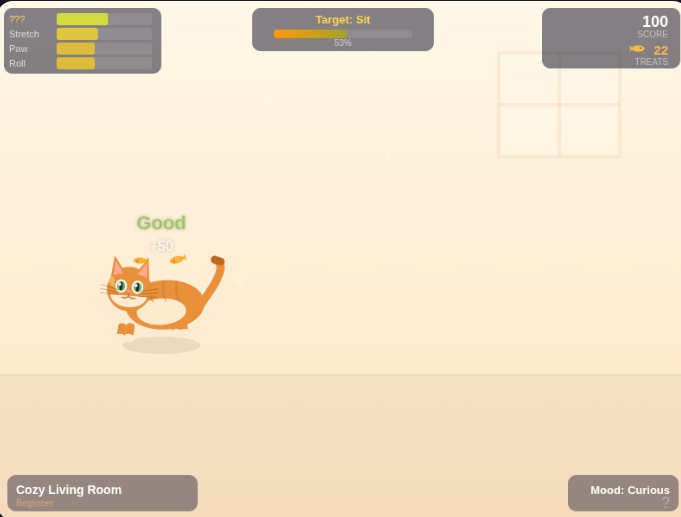
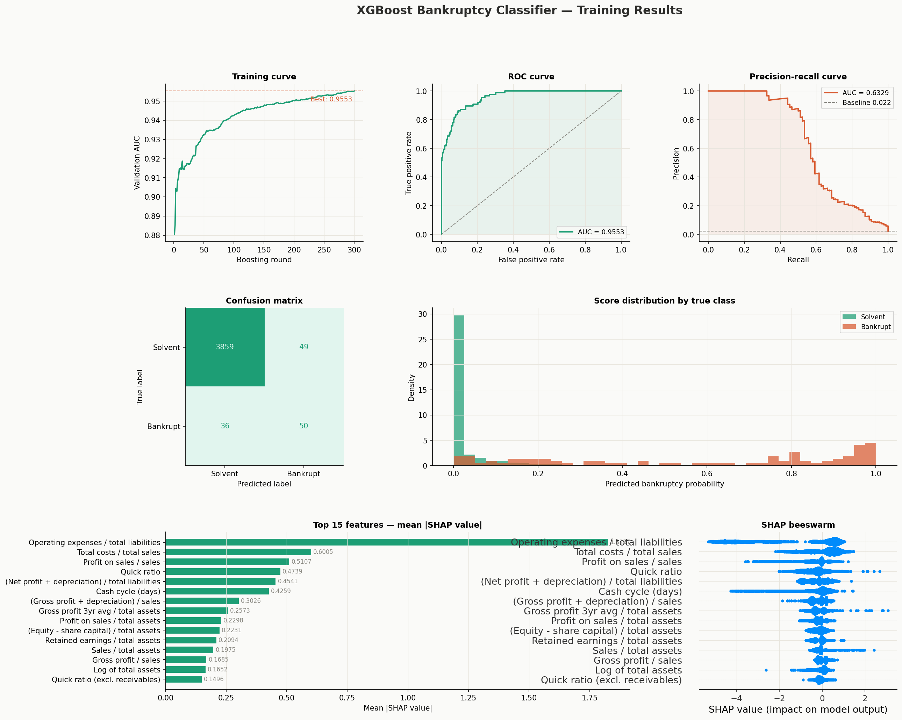
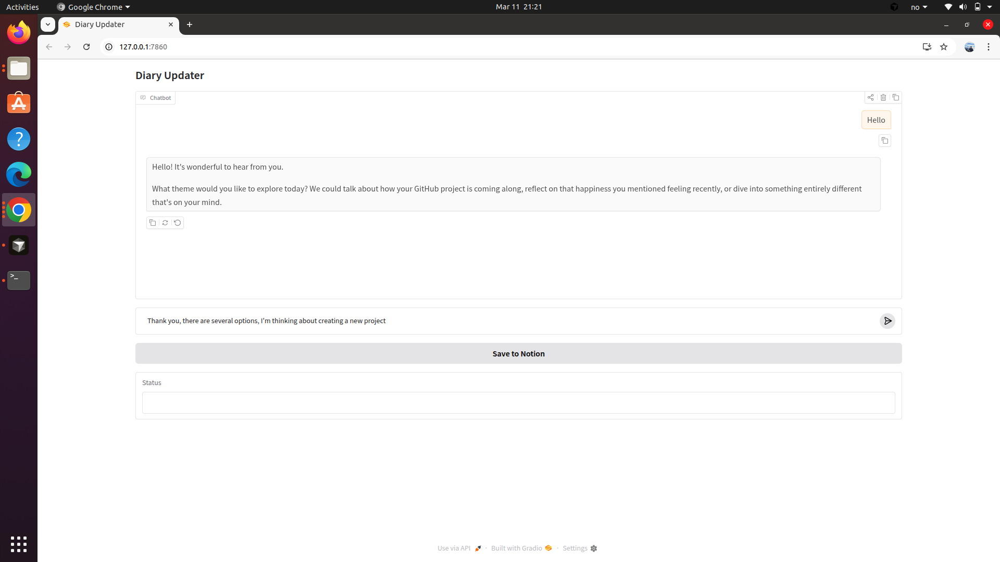
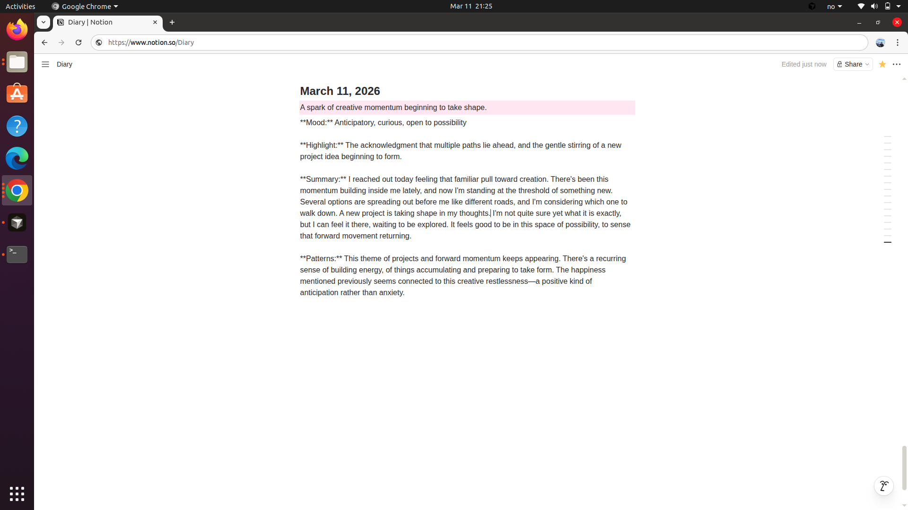

Hi, my name is
Norwegian University of Science and Technology, M. Sc. in Applied Physics and Mathematics, five years experience as an Acoustic Consultant, solving real world problems. AI Engineering and Data Scientist.
A bit about who I am and what I do.
I spent five years turning sound data into insight as an acoustic consultant. Now I'm doing the same with AI. With an M.Sc. in Applied Physics and Mathematics from NTNU as my foundation, I've pivoted into AI engineering — building LLM-powered tools, RAG systems, and ML pipelines that solve real problems. I'm not starting from scratch; I'm bringing a scientific mindset and years of domain expertise into a field I'm deeply passionate about.
I enjoy the full arc of building — from exploring a new architecture or framework to shipping something that actually works end-to-end. My projects span conversational AI agents, NLP and explainable ML.
Some highlights: a German language learning app with flashcards, quizzes, and hover-to-translate stories across all CEFR levels; a wolf behavior classification dashboard that uses Random Forest on GPS tracking data to map resting, foraging, and traveling states; and a cat training game where you teach a procedurally-drawn cat tricks across 7 rooms using reinforcement-style reward mechanics. I've also made some articles on AI topics and curate a live AI news feed if you want to stay in the loop. Want to pick up a conversation? Feel free to talk with my AI twin or contact me directly.
Things I've built and experiments I've run.

A browser-based cat training game where you teach a procedurally-drawn cat tricks, just like a real cat.


A conversational journaling app where you chat with Claude about your day. It summarizes the conversation into structured diary entries with themes, mood, and patterns — saved to Notion.

A privacy-focused CLI tool that records voice notes and transcribes them locally using Whisper — no cloud uploads. Supports multilingual input and saves entries to Notion.
Technologies and tools I work with.
Thoughts on AI, learning, and building things.
A breakdown of Dan Koe's viral article — the one-day protocol for identity-first change, the Anti-Vision framework, morning excavation questions, and key takeaways.
Read more →A reflection on what three books taught me about the two traps of money — spending everything and spending nothing — and why uncertain times make it harder, not easier, to get it right.
Read more →An honest look at what Claude Code excels at, where it struggles, and the guardrails every developer should set when using AI coding assistants to build real projects.
Read more →Meta open-sources a model trained on 1,000+ hours of fMRI data that predicts neural responses to content — and combined with their wearable hardware, it starts to look like a closed loop on human attention.
Read more →Google adds two inference tiers to the Gemini API — Flex cuts your bill in half for background workloads, Priority guarantees your requests never get dropped.
Read more →What actually improves Claude's output, what's cargo-culted nonsense, and which popular prompting tricks you can safely drop.
Read more →Nine categories where small teams can build real AI businesses — from vertical SaaS and consulting to fintech and developer tools, with honest assessments of competition and defensibility.
Read more →What the numbers actually say about AI's energy consumption, CO2 footprint, and water usage — plus practical steps developers can take to reduce the impact.
Read more →Prompt injection, data leakage, API abuse, XSS, and privacy — the security checklist for embedding an LLM chat on your site, drawn from building my own AI Twin.
Read more →Prompt injection, deepfakes, model theft, data poisoning, agent autonomy risks, and supply chain attacks — the AI security landscape as of early 2026.
Read more →A practical overview of Supabase — its components, common use cases, the security risks developers overlook, and how to prevent them.
Read more →A deep dive into retrieval-augmented generation — how it works, when to use it, and lessons learned building my own RAG chatbot.
Read more →Practical techniques for fine-tuning large language models on limited hardware — LoRA, QLoRA, quantization, and smart dataset choices.
Read more →How I got started with AI, the resources that helped most, and advice for others beginning the same journey.
Read more →Auto-updated headlines from across the AI world.
Ask me anything — my AI twin knows about my background, skills, and projects.
This is a Gradio-powered chatbot trained on my background, projects, and expertise. Ask it anything you'd ask me in an interview!
Gradio app will be embedded here once deployed.
I'm always open to discussing AI projects, collaboration opportunities, or just chatting about interesting ideas. Feel free to reach out!
Say Hello